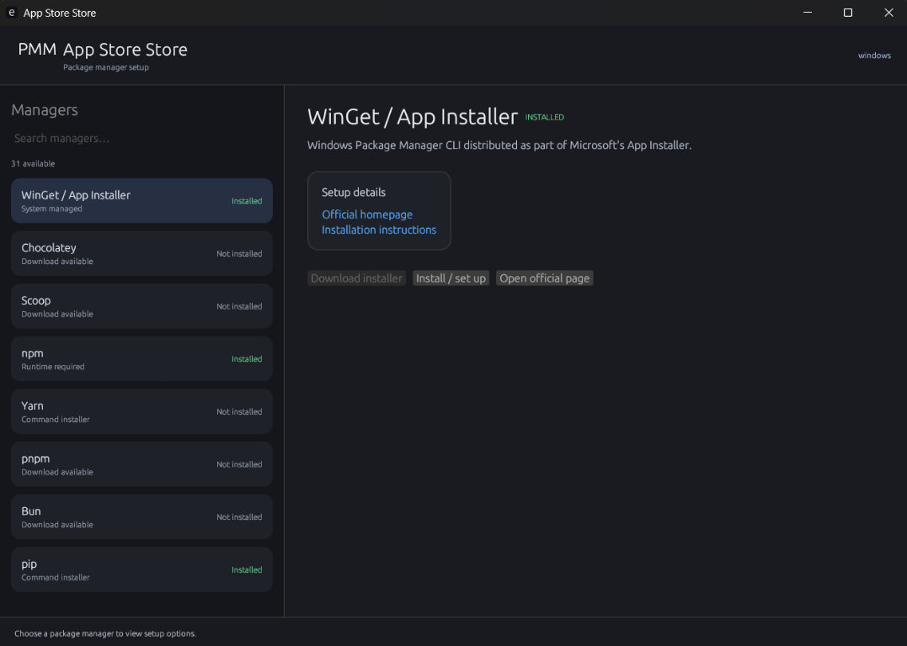
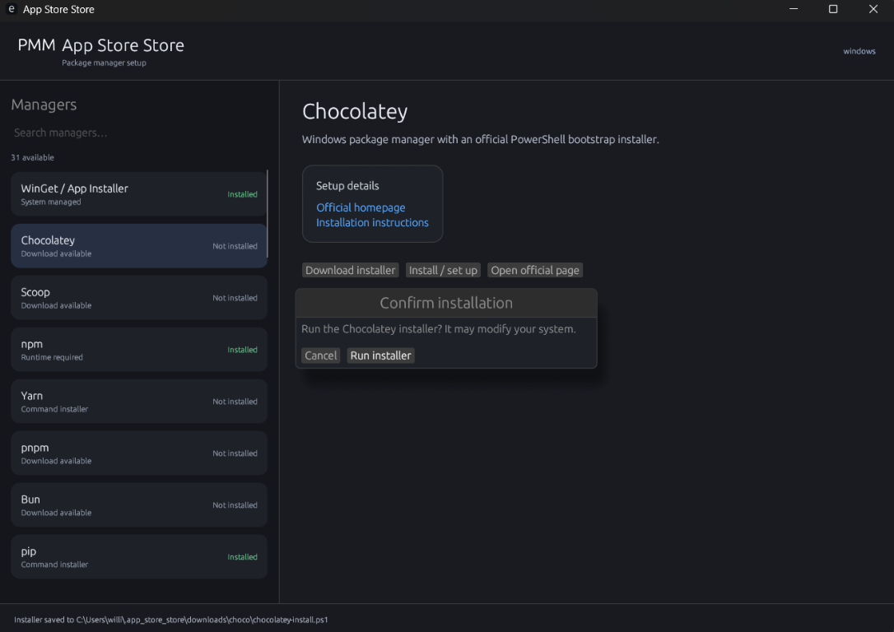

A useful starting point
Browse system and language package managers from one searchable, OS-aware list.
App Store Store, also known as PMM (Package Manager Manager), is a calm, cross-platform desktop app for setting up the tools your projects need.

Not another app catalog. App Store Store helps you get the package managers themselves ready for your machine.
Browse system and language package managers from one searchable, OS-aware list.
Review setup details and prerequisites. Installers wait for your confirmation.
Platform-aware listings and on-screen status checks keep the interface focused.
PMM shows the selected manager and asks before running an installer. You stay in control of setup.

See a few of the managers in the registry. What’s available depends on your operating system and setup.
Windows’ command-line package manager.
System manager ↗Install the tools you need on macOS and Linux.
System manager ↗The familiar package manager for Debian-based systems.
System manager ↗Discover packages for the Node.js ecosystem.
Requires Node.js ↗Build, manage, and share Rust packages.
Rust toolchain ↗A fast Python package and project manager.
Download available ↗Build and manage containers for your projects.
Setup guide ↗Manage Kubernetes applications with charts.
Download available ↗No managers found. Try a different search.
Examples from the registry. Availability and install methods vary by OS.
Browse what fits your system, check the prerequisites, and choose how to proceed.
See how to get started ↗Search a curated list filtered for your operating system.
See official setup links and any runtime prerequisites.
Nothing runs until you choose to continue.
Build the native desktop app with Rust. No account, cloud service, or web installer required.
$ cargo run
cargo run -- --tui for the terminal UI
Installer scripts can change your system. Review them, check their official instructions, and only run installers you trust.